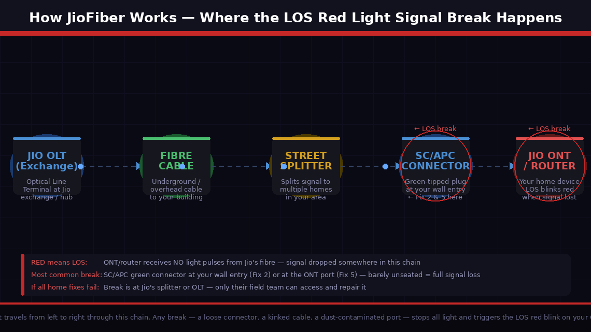
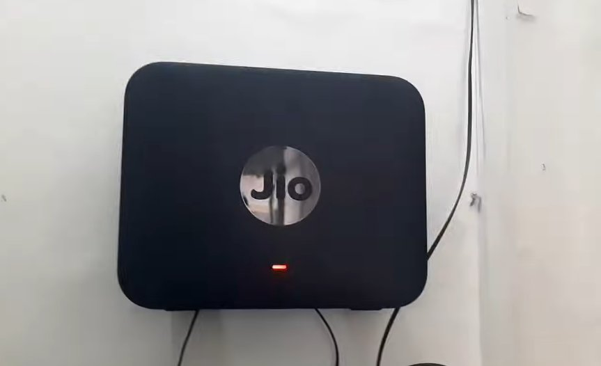
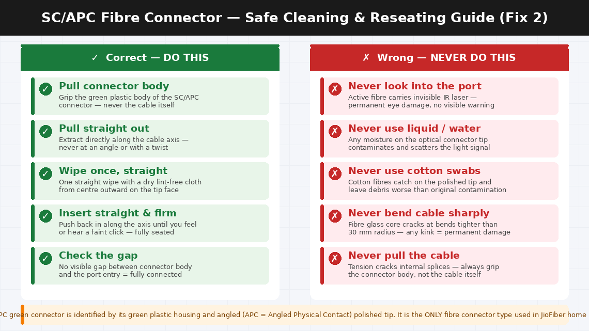
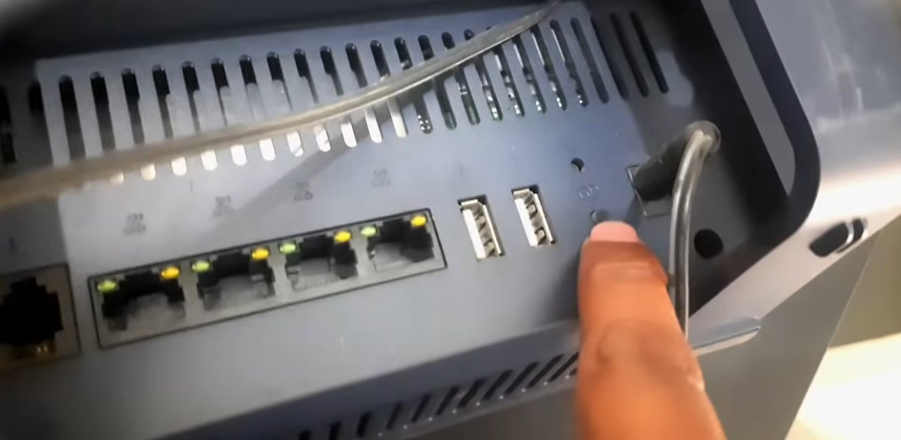
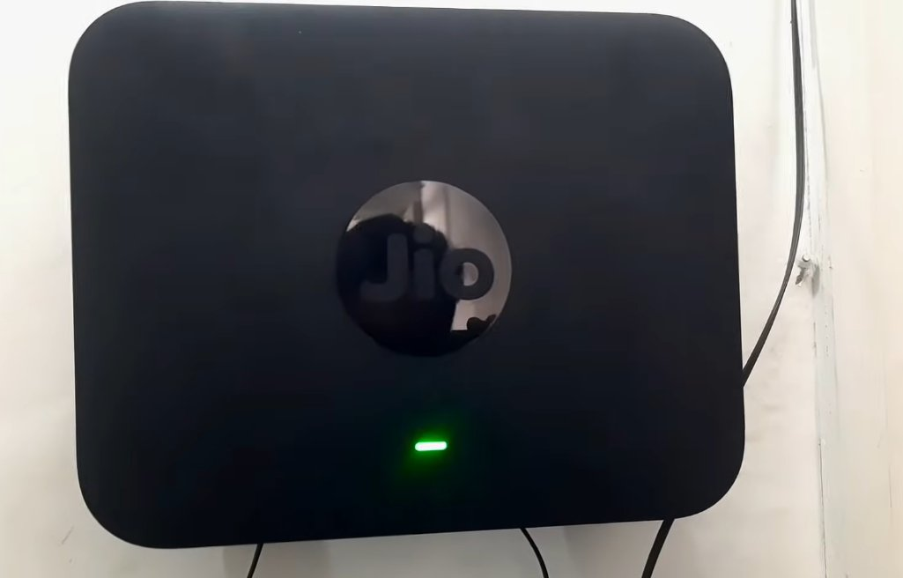

JioFiber Red Light Blinking (LOS): What It Means and How to Fix It
A blinking red LOS light on a JioFiber ONT means the fiber signal has been interrupted between the street cable and your ONT device. LOS stands for Loss of Signal. In most cases the cause is a fiber cable that's been disconnected or slightly pulled from the SC/APC connector on the ONT — it only needs to click back in. If that's not it, Jio needs to check the signal from their end.
What Does the Red Blinking LOS Light Mean?
On JioFiber routers and ONT (Optical Network Terminal) devices, the red blinking light specifically corresponds to the LOS indicator — Loss of Signal.
What's really happening, LOS means your JioFiber equipment is not receiving any optical signal from Jio’s fibre optic network. The router itself is powered and functioning — which is why the red light is blinking rather than the device being completely dead — but it cannot detect the light signal that should be travelling through the fibre optic cable to your home.
Here’s how JioFiber actually works: unlike traditional broadband that sends electrical signals through copper wires, JioFiber transmits data using pulses of light through a thin glass fibre cable. This fibre runs from Jio’s local distribution point (called an OLT — Optical Line Terminal) all the way into your home, connecting to the small white or black box called an ONT (Optical Network Terminal) or directly to your JioFiber router depending on your setup.
The LOS error appears when the ONT or router stops detecting those light pulses. The four primary reasons this happens:
- The fibre optic connector has become loose or disconnected. The small SC/APC connector — a green-tipped plug — that connects the fibre cable to your ONT or router can work loose from vibration, accidental pulling, or being nudged during cleaning. Even being 2mm from fully seated is enough to block the light signal entirely.
- The fibre cable has been bent too sharply, kinked, or physically damaged. A sharp bend smaller than 30 mm radius will crack the glass core inside and block the light signal permanently. Even a small kink the size of a ₹10 coin is enough.
- Jio is experiencing an outage or maintenance in your area. Signal disruptions at the OLT level will cause LOS on every customer connected to that node simultaneously.
- Dust or contamination on the optical port is scattering the light signal before it can be detected.
The good news: causes 1, 2, and 4 are all fixable at home. Cause 3 resolves itself once Jio restores service.


What You’ll Need
You need very little for most of these fixes:
- Your JioFiber router or ONT device
- A clean, dry lint-free cloth (for cleaning the fibre connector — if needed)
- A torch or flashlight to inspect the fibre cable routing
- Your smartphone with Jio mobile data (to check for outages and contact support if needed)
- About 10–20 minutes of your time
No screwdrivers, no technical equipment, and absolutely no tools required for the most common fixes.
5 Fixes — Fastest to Most Thorough
Follow the order — the quickest wins are at the top.
Before inspecting any cables, always start with a clean restart. A temporary signal glitch at Jio’s end — lasting a few seconds — can trigger an LOS state on your device that does not clear itself automatically. A restart forces the device to reattempt the optical connection from scratch.
- Locate the power adapter of your JioFiber router or ONT device.
- Unplug the power adapter from the wall socket completely.
- Wait a full 60 seconds. This allows the device’s optical receiver to fully power down and reset — a 10-second wait is not sufficient for this particular step.
- Plug the power adapter back into the wall and observe the indicator lights as the device boots up.
- Watch specifically for the LOS light — on most JioFiber ONT models this is a dedicated red indicator labelled “LOS” on the front or bottom panel.
- Give the device 2–3 minutes to fully initialise and attempt to acquire the optical signal. Optical signal acquisition can take longer than general startup.
- If the LOS light turns off and other indicators turn green or white, your connection has been restored. Test internet on a device.
If the LOS light remains red after 3 minutes, move to Fix 2.
This is the fix that resolves the LOS error for the majority of users who couldn’t fix it with a restart. The fibre optic connector — the small green-tipped plug where the thin fibre cable meets the ONT or router — is surprisingly easy to dislodge, and being even slightly unseated is enough to interrupt the light signal completely.
- Power off the JioFiber router or ONT by unplugging it from the wall socket. Wait 30 seconds.
- Locate the fibre optic cable where it enters the ONT or router. It connects via a small plug called an SC/APC connector — recognisable by its distinctive green-coloured tip and matching green port on the device.
- Look at the connection point carefully with your torch. Check whether the green connector is fully seated — it should be pushed all the way into the port with no visible gap between the connector body and the port entry.
- Grip the green connector body firmly (not the cable itself) and gently pull it straight out.
- Inspect the green tip of the connector. If you can see any dust, debris, or smudging on the polished end face, clean it by gently wiping it once with a dry lint-free cloth in a straight motion — never in circles.
- Don't use compressed air, water, cotton swabs, or any liquid on the fibre connector. Only a dry lint-free cloth should ever touch the connector end.
- Reinsert the green connector firmly and straight into its port until it clicks into place. Do not force it at an angle.
- Plug the power adapter back in and observe the LOS light. If it clears, the connection was the entire problem.

If reseating the connector didn’t help, physically inspect the entire length of the fibre cable running from the ONT into your home. A kinked or sharply bent cable breaks the internal glass fibre — producing exactly the same LOS signal as a disconnected cable.
- Start at the ONT or router and follow the fibre cable with your eyes and torch along its entire visible path — typically running along walls, through cable clips, around door frames, and entering through a wall port.
- Look specifically for any point where the cable:
- Makes a sharp bend or kink — fibre cables must never be bent tighter than approximately 30 mm radius (about the diameter of a ₹10 coin). Any tighter bend risks cracking the glass core.
- Has been pinched under furniture, a door frame, or a cable clip that is too tight.
- Shows any visible white or bright spot along the cable — a cracked fibre sometimes glows at the damage point because light leaks out.
- Has been pulled or stretched — fibre cables are not designed to bear tension along their length.
- If you find a kinked or sharply bent section, gently straighten the cable — it may still be functional if the glass fibre hasn’t fully cracked.
- If the cable has a visible white spot, a crimp, or a bend that held shape when straightened, the fibre is physically damaged and must be replaced by a Jio technician. A damaged fibre cable cannot be spliced or repaired at home.
- After straightening any found bends, restart the ONT (Fix 1) to check whether the LOS clears.

Before concluding the problem is with your equipment, spend two minutes confirming whether Jio is experiencing a service disruption in your area. A node-level outage at Jio’s OLT equipment causes every customer connected to that node to show LOS simultaneously — and no amount of cable inspection or restarting will restore the connection until Jio’s network is repaired.
- On your mobile phone using Jio mobile data (not Wi-Fi — your broadband is down), open the MyJio app.
- Navigate to Help > JioFiber > Report Issue — the app will check your account status and often automatically detect whether a network outage has been flagged in your area.
- Alternatively, call Jio customer care at 1800-889-9999 (toll-free, 24 hours) and ask the agent to check whether there is an outage or maintenance scheduled on your specific OLT node.
- Check social media — search “JioFiber down” or “JioFiber LOS” on Twitter/X to see whether other users in your city or locality are reporting the same issue simultaneously.
- If an outage is confirmed: Note the expected restoration time. The LOS light will clear automatically when Jio restores the signal — nothing further is needed on your end.
- If no outage is reported and neighbours with JioFiber have working internet: the issue is specific to your line or equipment. Continue to Fix 5.
JioFiber installations include a connection point on the external wall of your home — where the fibre cable that runs from the street enters your premises. This junction, sometimes called the FAT (Fibre Access Terminal) connection or the SC connector at the wall entry point, can work loose after heavy rains, wind, or during wall cleaning.
- Locate the point on your home’s external wall where the fibre cable enters — usually a small wall-mounted enclosure or a simple pass-through hole with a connector visible near it.
- If this connection point is at a safe, accessible height (reachable without a ladder), inspect whether the fibre connector at this junction is fully seated. It will have the same green SC/APC connector as the one at the ONT inside.
- If you can safely reseat the external connector, do so using the same technique as Fix 2 — pull straight out, wipe once with a lint-free cloth if accessible, reinsert straight until it clicks.
- Return inside and restart the ONT (Fix 1) to check whether the LOS light clears.
- If the external connection point is not safely accessible at ground level, do not attempt to reach it — book a Jio technician visit directly.

When to Call Jio
The JioFiber LOS error is one of those problems that is either completely fixable at home in a few minutes, or completely in Jio’s hands to fix. Stop troubleshooting and raise a service request when:
- The fibre cable is visibly damaged — kinked, cut, crushed, or showing a bright glow point. Fibre cable cannot be repaired at home. A Jio technician will need to run a new cable segment, which is covered under the JioFiber installation warranty.
- All home-side fixes have been completed (connector reseated, cable inspected, device restarted) and the LOS light is still blinking with no reported outage. The fault is likely at Jio’s splitter or OLT — only their field team can access and repair it.
- The LOS light clears temporarily but returns within a few hours or days. Intermittent LOS is a classic symptom of a degraded fibre splice or a connector accumulating contamination at a junction point outside your home. Only a field technician with optical power measurement equipment can locate and fix an intermittent signal loss precisely.
- The ONT device itself shows signs of hardware failure — such as no lights at all, visible physical damage, or error codes other than LOS blinking. The ONT is Jio’s equipment provided on loan as part of the JioFiber subscription — faulty hardware is Jio’s responsibility to replace at no charge.
How to raise a JioFiber complaint:
- MyJio App: Open the app > Help > JioFiber > Raise a Complaint. Field technician visits are typically scheduled within 24–48 hours for LOS complaints in urban areas.
- Call: 1800-889-9999 (toll-free, 24 hours, 7 days). Specify “JioFiber LOS red light blinking” clearly.
- Jio Store: Visit your nearest Jio store in person if the complaint is not resolved within 48 hours of logging.
When speaking to Jio support, have your JioFiber account number (on the MyJio app under “My Account”), your registered mobile number, and confirm that the LOS light is specifically the one blinking red.
Quick Summary
| Fix | Difficulty | Time Needed |
|---|---|---|
| Restart the JioFiber ONT/router (60-second unplug) | Very Easy | 3 minutes |
| Reseat the green SC/APC fibre connector | Easy | 5 minutes |
| Trace fibre cable for sharp bends or physical damage | Easy | 10 minutes |
| Check MyJio app and call for area outage status | Very Easy | 2 minutes |
| Inspect external wall entry fibre connection point | Moderate | 5 minutes |
Start at the top. A clean 60-second restart followed by a firm reseat of the green fibre connector resolves the blinking red LOS light for the majority of JioFiber users without any further action. If neither works, a two-minute outage check on the MyJio app will immediately tell you whether the problem is on Jio’s side — saving you from troubleshooting a fault that only Jio can fix.
Cleared your JioFiber LOS error with one of these steps? Fix 2 — reseating the green SC/APC connector — is the one that resolves it most often after the initial restart fails. It is also the fix most people skip because they assume a cable that “looks connected” must be connected. On fibre, a connector that’s 2 mm from fully seated might as well be fully disconnected — light is unforgiving that way.